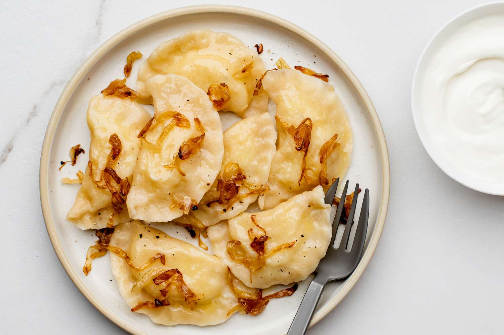

Polish dumplings with potatoes, cheese and butter

Ingredients
- Potatoes
- Milk
- Unsalted butter
- Any type of cheese
- All purpose flour
- Large egg
- Onion
- Salt and pepper
Instructions,
Time to prepare: 2 hours
- Step 1: We will first make the filling as it takes the longest time. Start off by cutting and boiling the potatoes in salted water.
- Step 2: After the potatoes have done cooking we will now drain them and put them in a mixing container.
- Step 3: We will now add the butter and cheese along with salt and pepper to the mixing container and start mashing all the ingridients together.
- Step 4: Set the filling to cool for roughly an hour in the fridge.
- Step 5: While waiting for the filling to cool we will now make the dough. Put the flour into a bowl, add a bit of salt and begin to mix.
- Step 6: Make space in the middle of the bowl and add melted butter along with an egg. Mix this until a dough texture is made. After that is done leave it to rest for roughly 30 minutes.
- Step 7: Put flour on your a wooden board and scrape out your dough onto it. Knead it for about 5 minutes until the dough becomes smooth.
- Step 8: Now for actually forming the pierogi. Roll out the dough to be roughly 3mm in thickness. Use a glass that is circular and cut out circles in the dough. When you run out of space, gather the remaining dough and roll it up and repeat the process.
- Step 9: We will now add the filling to the dough circles. Get a spoonful of the filling(roughly 20 grams) and place it in the middle of the circle.
- Step 10: Dip your fingers in water and run it over the half the edge of the circle. Then fold the circle over and pinch the edges to make a tight seal.
- Step 11: Now onto the cooking part. Get a pot and fill it with 3 liters of water, add one tablespoon of salt to the water and get the water to boil. Put in 8 at a time so they don't stick together and boil for 5 minutes. After they are done boiling scoop them out and place in a container. Repeat the process until all are cooked.
- Step 12: We will now make the "sauce" for them. Melt 25g of butter on a pan and add chopped onions to the pan.
- Step 13: Everything is ready to serve now. Place the pierogis on the plate and add a bit of the sauce we just made on top of the pierogis for the ultimate polish expierience.
Enjoy your authentic Polish pierogi